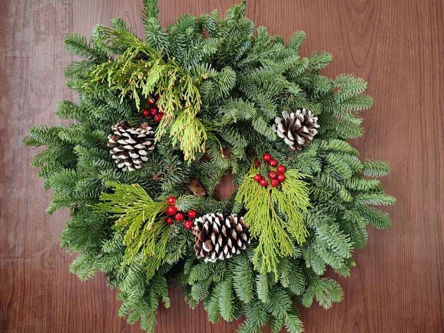

两栖动物 · 动物界
斑腿泛树蛙 Polypedates megacephalus

中国南方常见的树蛙，趾端有吸盘，善攀爬，会把卵产在悬挂于水面上方的泡沫巢中，蝌蚪孵化后落入水中。
- 分类
- 门脊索动物门纲两栖纲目无尾目科树蛙科属泛树蛙属
- 栖息环境
- 丘陵与低山的树林、灌丛、农田、村落及水边植被
- 地理分布
- 中国云南、广西、广东、福建、湖南、江西等地及东南亚
- 保护级别
- IUCN 无危（LC）；中国“三有”保护动物
物种志
斑腿泛树蛙体长 5–7.5 厘米，雌蛙大于雄蛙，头部宽大，吻端钝圆，皮肤光滑，背面呈浅褐、黄褐或灰褐色，四肢后侧有黑褐色网状斑纹，“斑腿”之名由此而来；趾端膨大成吸盘，能在树叶和光滑表面攀爬，趾间有蹼，善于游泳。
它分布于中国华南、西南及东南亚，栖息于丘陵和低山的树林、灌丛、农田与村落，夜间活动，捕食昆虫和蜘蛛。繁殖行为独特：繁殖期雄蛙聚集在水边鸣叫，雌蛙与雄蛙抱对后，在水面上方的枝叶上排出分泌物，并用后肢搅拌成泡沫巢，卵产于巢中，约 5–7 天后蝌蚪孵化并落入下方水体，在水中完成变态。它适应力强，能在人工水景和稻田中繁殖，目前种群数量较稳定，被列入中国“三有”保护动物名录。
形态与习性
- 食性昆虫和蜘蛛
- 体长5–7.5 cm
- 寿命约 5–8 年
- 繁殖卵生，卵产于水面上的泡沫巢，约 5–7 天孵化
- 活动节律夜行性
- 特征趾端吸盘和四肢后侧的黑色网纹
趣味知识
- 斑腿泛树蛙会用水草和分泌物制造泡沫巢，把卵挂在枝叶上，像一团白色棉花。
- 蝌蚪从泡沫巢中孵化后会直接落入下方水中继续发育。
- 它的趾端吸盘能牢牢吸附在树叶上，倒挂也不易滑落。
生态关系
- 栖息 → 香樟 树蛙栖息于树冠与枝叶间